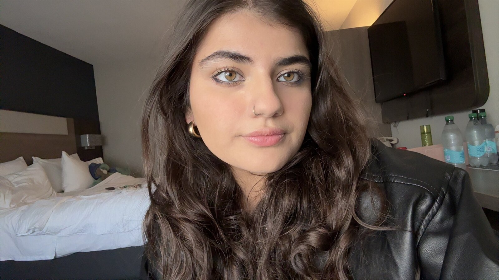

Public health, words, pictures and sound
Radhika
Vyas
Peer reviewed. Party approved.

From the field guide: Specimen II
Ursus radhika, adult form. Habitat: the lab by day, the digital realm by night.
Hi, I'm
Radhika.
I'm a public health researcher in epidemiology and biostatistics. Mostly I ask how the places we live end up showing up in our bodies: the air, the ground under our feet, the systems around us. And I ask who ends up carrying that weight.
Outside the data, I write, I take portraits and landscapes, and I build DJ mixes and playlists for every mood I've ever had. I wear a lot of black, I think grizzly bears are perfect, and I have a soft spot for bats.
If it involves people, food, or a good bassline, I'm probably interested.
Pick a card
What makes me, meCurrently
- Researching
- How air quality shapes who needs care
- Spinning
- “SaWaDiKa” by LISA, on repeat
- Reading
- The Hunger Games and Eve by Cat Bohannon
- Spirit animal
- Grizzly, obviously